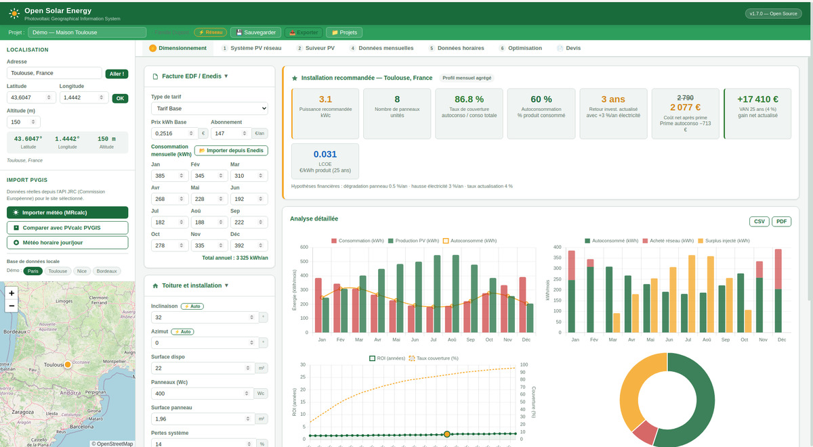
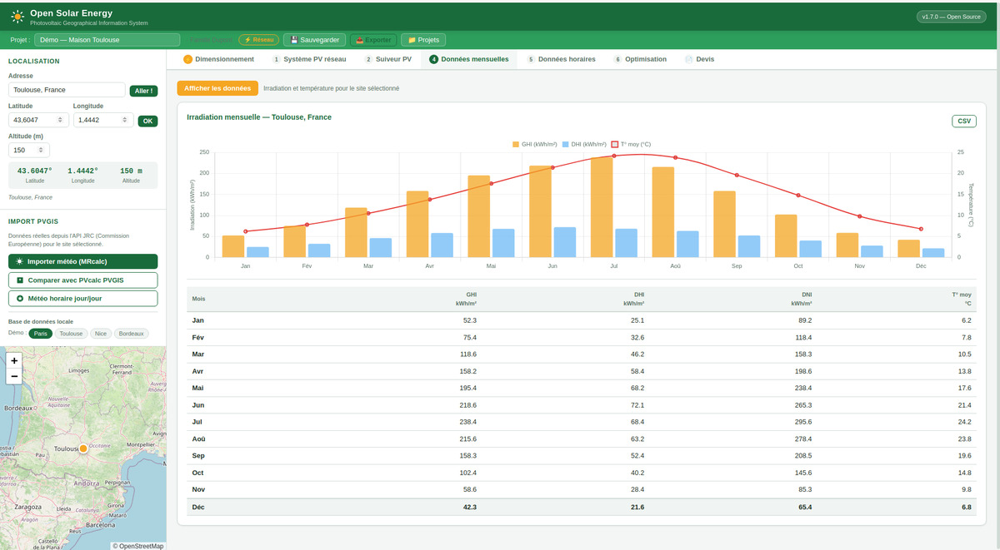
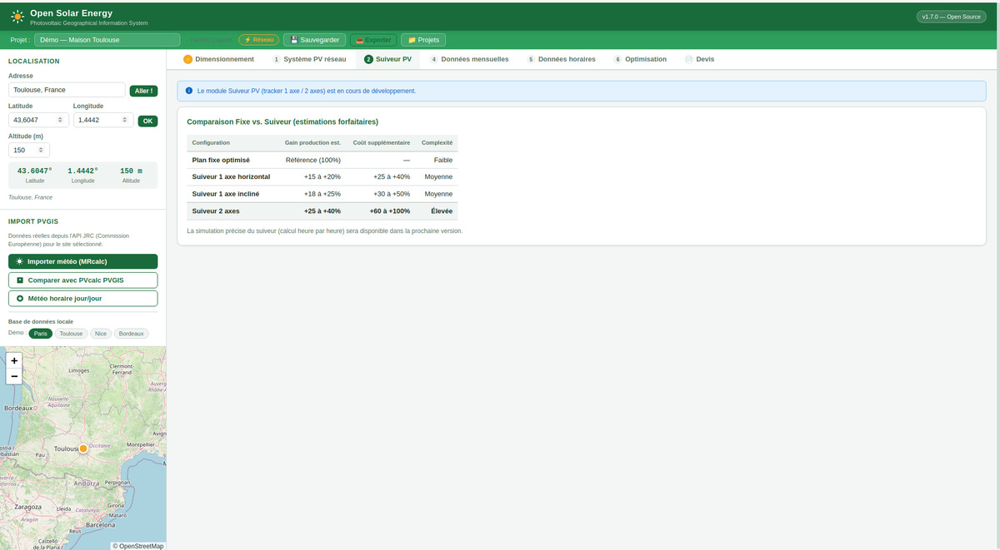

Application desktop Linux pour dimensionner des installations solaires. Encore jeune, probablement buguée par endroits — tes retours et rapports de bugs sont ce dont on a besoin.

Interface complète avec carte interactive, graphiques de production et analyse financière détaillée.
Résultats pour Toulouse — 8 kWc, ROI 3,1 ans, 86,8 % autoconsommation, +17 410 € de gain net actualisé sur 25 ans

Irradiation mensuelle sur plan incliné pour Toulouse — modèle HDKR anisotrope avec données Open-Meteo

Comparaison fixe vs. suiveur 1 et 2 axes — gain de production estimé selon latitude et configuration
Voilà ce qui est implémenté — certaines parties sont plus matures que d'autres.
Modèles de référence académique, pas de coefficients forfaitaires.
Depuis ta facture EDF ou l'export CSV de ton espace Enedis.
Simulation horaire complète avec 6 technologies de stockage.
Plusieurs sources, une seule interface.
Génération PDF A4 complète depuis l'application.
Plusieurs scénarios, zéro cloud.
Aucune dépendance, aucun runtime à installer. Un seul fichier exécutable.
Récupérer Open-Solar-Energy-*.AppImage depuis la page Releases.
chmod +x Open-Solar-Energy-*.AppImage
./Open-Solar-Energy-*.AppImage
Les mises à jour sont automatiques — l'application vérifie les nouvelles versions au démarrage et propose le redémarrage.
Le fichier Open-Solar-Energy-*-Setup.exe sera disponible dans les releases.
Double-clic sur le fichier .exe et suivre l'assistant.
# Cloner le dépôt :
git clone https://github.com/Poisson48/open_solar_energy.git
cd open_solar_energy
# Lancer :
serve.bat
La version navigateur fonctionne sur tout OS avec Python 3 installé.
Coûts HT pro intégrés — comparez les options pour trouver le meilleur rapport coût/durabilité.
| Technologie | DoD | Rendement | Cycles | Coût | Profil |
|---|---|---|---|---|---|
| LFP standard (neuf) | 80 % | 97 % | 3 000 | 400 €/kWh | Fiable |
| LFP DIY CATL/EVE 280Ah | 90 % | 97 % | 3 000 | 100 €/kWh + BMS 200 € | Économique |
| AGM plomb carbone | 50 % | 85 % | 600 | 120 €/kWh | Budget |
| NMC recondit. Nissan Leaf | 80 % | 96 % | 800 | 45 €/kWh + BMS 150 € | Économique |
| NMC recondit. Renault Zoé | 80 % | 96 % | 900 | 50 €/kWh + BMS 150 € | Économique |
| NMC recondit. Tesla | 85 % | 97 % | 1 000 | 65 €/kWh + BMS 200 € | Haute densité |
Pas besoin de coder. La meilleure contribution en ce moment c'est d'essayer l'app et de remonter ce qui ne va pas.
Un calcul qui semble faux, un import qui plante, une interface qui s'affiche mal — tout est utile.
Tu utilises PVGIS ou une autre solution actuellement ? Dis-nous ce qui manque, ce qui est confus, ce qui est bien.
JavaScript vanilla, aucun framework. Si tu vois quelque chose à améliorer, une PR est la bienvenue.
Gratuit, open-source, sans inscription. Si quelque chose cloche, dis-le nous.